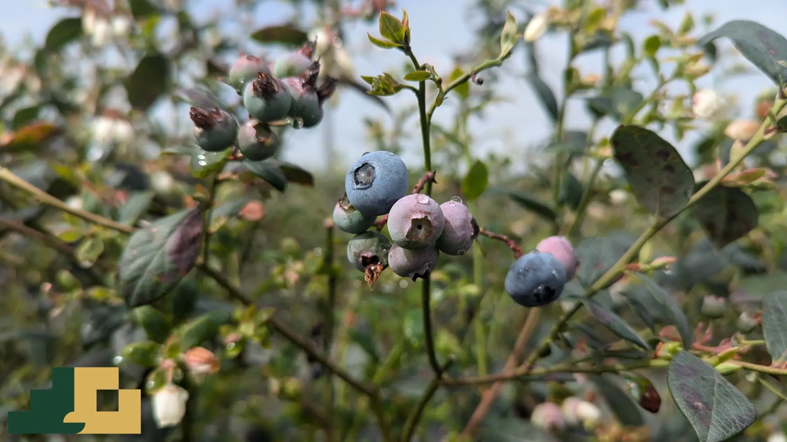
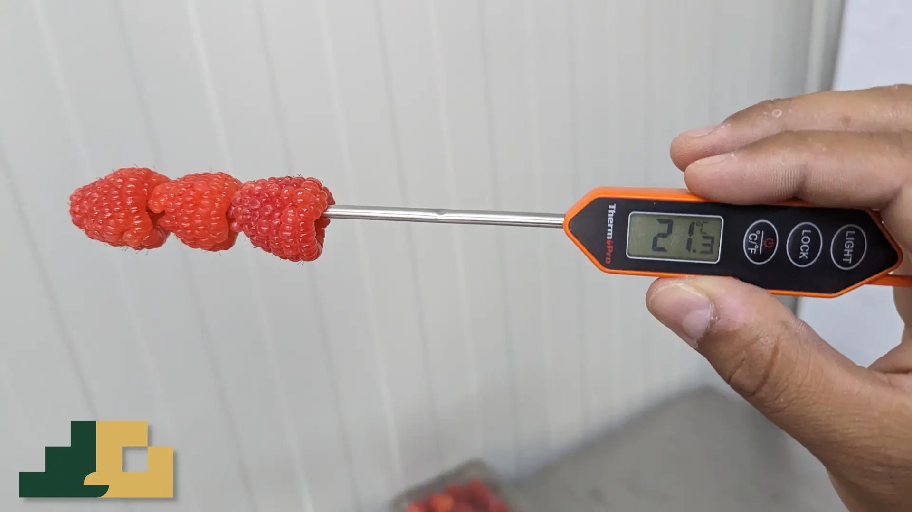
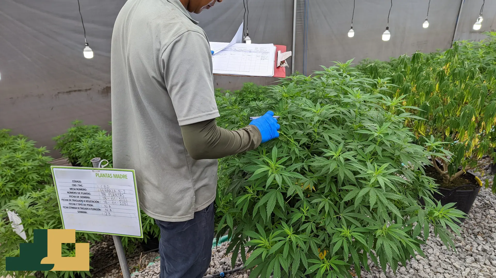

Observar el proceso
Como ingeniero agroindustrial divido los procesos en sus unidades mínimas y entiendo los retos biológicos, físicos y químicos. El contexto operativo es la mitad del diagnóstico.



AGRODATA · ANÁLISIS DE DATOS AGROINDUSTRIALES
El problema que resuelvo
En el agro se genera muchísima información: producción, cosecha, poscosecha, calidad, logística, ventas. Pero suele quedarse guardada en Excels y archivos muertos, y las decisiones se toman por intuición.
Mi solución
Convierto esa información dispersa en visibilidad para decidir. No entrego gráficos; entrego claridad para actuar.
Cómo trabajo
Como ingeniero agroindustrial divido los procesos en sus unidades mínimas y entiendo los retos biológicos, físicos y químicos. El contexto operativo es la mitad del diagnóstico.
Limpio históricos, cruzo variables que nadie había conectado y segmento. Lo que los promedios esconden aparece cuando los datos se miran bien.
El análisis no termina en un gráfico: termina en una acción que alguien puede ejecutar. Conecto la operación con las ventas.
Casos
Proyectos bajo acuerdo de confidencialidad, presentados de forma anonimizada. Mismo patrón, mismo método: pasar de la intuición a la decisión.
De decidir "a ojo" a planificar con datos
Comercializadora de berries frescos, con canales B2B y B2C.
Decisiones por intuición; sin visibilidad por canal, región ni cliente.
Transformé cinco bases dispersas en un tablero de control: ventas, dinámica regional, alertas de riesgo y portafolio.
Un equipo comercial que pasó de ser reactivo a planificar con semáforos de riesgo y matrices de dependencia.
Del promedio estático al plan de cosecha prescriptivo
Agroindustria de arándanos con planificación a ojo, horas extra sorpresa y efecto látigo.
¿Cómo convertir registros históricos en un plan semanal de horas, brechas y costos con incertidumbre a la vista?
Los promedios ocultaban un círculo vicioso: impacto de la curva de aprendizaje, fatiga, estacionalidad y competencia laboral.
Un zoológico de pronósticos para un modelo prescriptivo: contratar cuando el break-even lo justifica y recalibrar metas en ventanas de estrés.
Lo que más duele, en un número
Productora de rosas de exportación en Colombia.
La operación depende del dólar, salario, merma, precio y flete. Cada movimiento cambia el margen sin un instrumento para cuantificarlo.
Modelo de sensibilidad que traduce el movimiento de cada variable a pesos de utilidad. Diagrama de tornado para priorizar palancas.
Cada sensibilidad apunta a una palanca distinta. El modelo cuantifica la exposición; la decisión la toma el cliente.
Caja de herramientas
No elijo la herramienta por moda. Elijo la que reduce la fricción entre el dato crudo y la decisión del miércoles a las 9 a. m.
Recorro el proceso productivo etapa por etapa —tiempos, merma, mano de obra, cuellos de botella— para dibujar dónde se pierde valor antes de proponer nada.
Traduzco el movimiento del dólar, el salario, la merma y el flete a pesos de utilidad perdidos o ganados. Diagramas de tornado para decidir con números.
Unifico bases dispersas en dashboards interactivos que muestran canal, región, cliente y riesgo en una sola vista. Diseñados para comités, no solo monitores.
Depuro históricos y segmento trabajadores, variedades y clientes para encontrar lo que los promedios esconden. Soluciones explicables sin cajas negras.
Recorrido
No llegué a los datos desde un escritorio. Llegué desde el campo, entendiendo primero los procesos biológicos y operativos para luego medirlos con rigor.
La base técnica. Aprendí a dividir los procesos en sus unidades mínimas y a entender los retos biológicos, físicos y químicos de la materia prima.
Experiencia directa en hongos, cannabis y berries. Aquí aprendí que los promedios mienten y que la mano de obra es el cuello de botella más crítico.
La evolución natural. Incorporé Python, SQL, y otras herramientas. Pasé de reportar lo que pasó a construir modelos predictivos explicables.
Hoy traduzco esa dualidad. Hablo el idioma del campo y el de los datos, construyendo puentes entre ambos para decidir con claridad.
Contacto
Si tu proyecto o empresa tienen información operativa o comercial que no está siendo utilizada para decidir, escríbeme. Revisamos el contexto, evaluamos la viabilidad y te digo con claridad qué se puede hacer.
Ubicación: Colombia (Disponible para proyectos remotos)
Respuesta: En menos de 48 horas hábiles.